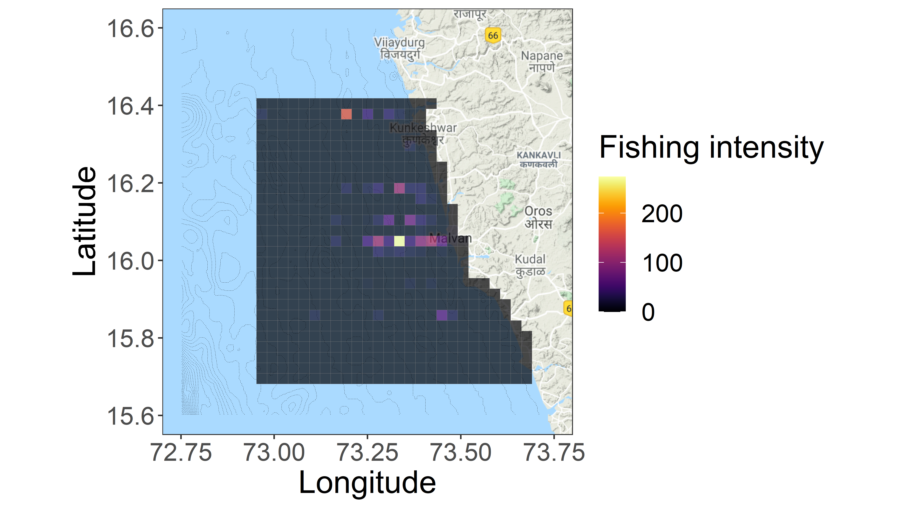

5 Varition in fishing intensity along the sindhudurg coast
source("Functions/setup.R")
# importing effort data
effort = read.csv("./Data/Fishing-Effort_250720.csv")%>%
group_by(Date, Gear.Type)%>%
distinct(Boat.name, .keep_all = T)%>% # fixing repetitions in effort data
mutate(Month = factor(months(dmy(Date)),
levels = month.name),
Year = year(dmy(Date)))%>%
filter(Gear.Type == "Trawler" | Gear.Type == "GillNet") # removing beach seines and purse seines5.1 Calculating effort with depth
Fishing intensity: Vessel effort (Number of days fishing x No. of hauls x Average time per haul) is calculated for each boat on each day. This is then totaled for the sampling duration at each site.
- Should fishing intensity be analysed seperately by fishing gear.
- Should calculation of fishing intensity factor in Gears.
dep_int = effort%>%
filter(Fishing.Location != "")%>% #removing missing location data
dplyr::select(Date, Gear.Type, Fishing.Location, Boat.name,
No..of.Hauls, Average.Haul.Time..Hours., No..of.Days.fishing, Depth..wav.)%>%
group_by(Gear.Type)%>%
# interpolating missing data with medians
mutate(n.days = ifelse(is.na(No..of.Days.fishing),
median(No..of.Days.fishing, na.rm = T), No..of.Days.fishing),
n.hauls = ifelse(is.na(No..of.Hauls),
median(No..of.Hauls, na.rm = T), No..of.Hauls),
haul.time = ifelse(is.na(Average.Haul.Time..Hours.),
median(Average.Haul.Time..Hours., na.rm = T), Average.Haul.Time..Hours.))%>%
ungroup()%>%
# calculating fihsing effort per trip
mutate(effort = (n.days)*(n.hauls)*(haul.time),
Depth.m = Depth..wav.*1.87)%>% # converting depth to meters
dplyr::select(Date, Boat.name, Gear.Type, Fishing.Location, Depth.m, effort)%>% # selecting relevant variables
drop_na() # remving missing values5.2 Geocoding fishing trips
Using data gathered from fisher surveys, we mapped the location of each fishing trip.
The protocol for geocoding fishing trips is as follows:
- Nearest landmarks are geocoded from google maps API
- Latitude is extracted from landmark geocode
- Match landmark latitude and depth from survey to GEBCO data
- Extract final longitude from GEBCO data
The protocol is encoded in Function/geocode.R
source("./Functions/geocode.R")
dep_int <- geocode.trips(dep_int, fl = "Fishing.Location", dep = "Depth.m")
# removing duplicates introduced by fuzzy joining
dep_int <- distinct(dep_int, Date, Boat.name, .keep_all = T)
# saving output
write.csv(dep_int, "./Data/Fishing intensity_dep.csv")Note: fuzzyjoin::fuzzy_inner_join() introduces many duplicates, I have not as yet been able to fix the issue dirrectly. Currently, removing duplicates from output using dplyr::distinct().
5.3 No. of trips sampled
## Sample size
enframe(table(dep_int$Gear.Type))| name | value |
|---|---|
| GillNet | 175 |
| Trawler | 104 |
5.4 Summarising fishing effort per trip
# effort per boat
dep_int %>%
skimr::skim(effort) %>%
skimr::yank("numeric") %>%
dplyr::select(-hist)Variable type: numeric
| skim_variable | n_missing | complete_rate | mean | sd | p0 | p25 | p50 | p75 | p100 |
|---|---|---|---|---|---|---|---|---|---|
| effort | 0 | 1 | 7.28 | 9.42 | 0.17 | 1 | 1.5 | 18 | 48 |
5.5 Testing difference in effort by gears
# T - test
broom::tidy(t.test(effort ~ Gear.Type, data = dep_int)) %>%
dplyr::select(estimate:p.value) %>%
# Effect size
mutate(d = lsr::cohensD(effort ~ Gear.Type, data = dep_int)) %>%
dplyr::select(-estimate) %>%
rename(`Gill net` = estimate1, Trawler = estimate2)| Gill net | Trawler | statistic | p.value | d |
|---|---|---|---|---|
| 1.1132 | 17.65625 | -20.81715 | 0 | 3.335484 |
Trawlers had much higher fishing efforts than gillnets off the coast of Sindhudurg from 2018 - 2019.
5.6 Mapping fishing intensity
# required libraries
library(sp)
library(rgdal)
library(raster)
library(ggmap)
# Sampling grid as raster
ext <- raster("./Data/sampling_extent.tif")
# importing functions for standardising effort
source("./Functions/intensity extract.R")
source("./Functions/raster to df.R")
# Calculating fishing intensity in each grid cell
fi <- dep_int%>%
nest()%>%
mutate(m = map(data, ~map.extract(df = ., var = "effort", func = 'sum')),
mdf = map(m, map.df))%>%
dplyr::select(mdf)%>%
unnest()%>%
rename(intensity = layer)
# Plotting intensity of fishing by gear type
base <- get_googlemap(center = c(mean(dep_int$lon),mean(dep_int$lat)),
zoom = 9, scale = 4, maptype = "terrain")##Getting basemap
## importing bathymetric data downloaded from GEBCO database
library(marmap)
depth <- readGEBCO.bathy("./Data/gebco_2020_n16.7_s15.5_w72.0_e73.9.nc")
## converting depth data to usable data frame
depth = fortify.bathy(depth)%>%
dplyr::rename(lon = x, lat = y, depth = z)%>%
filter(depth < 1)
## creating plot
require(grid)
require(metR)
require(viridis)
ggmap(base)+
metR::geom_contour2(data = depth, aes(x = lon, y = lat, z = depth),
breaks=seq(-10, -1000, -10), colour="black", size = 0.25, linetype = "dashed")+
geom_tile(data = fi, aes(x = x, y = y, fill = intensity), color = "grey50", alpha = 0.8)+
coord_quickmap()+
scale_x_continuous(limits = c(72.75, 73.75))+
scale_y_continuous(limits = c(15.6, 16.6))+
scale_fill_viridis(name = "Fishing intensity", option = "B",
guide = guide_colorbar(direction = "horizontal",barwidth = 10,
title.position = "top", title.hjust = 0.5))+
scale_alpha_continuous(range = c(0.7, 0.8), guide = F)+
labs(x = "Longitude", y = "Latitude")+
theme(legend.position = c(0.2, 0.9))
## saving high res figure for publication
ggsave(last_plot(), filename = "./Figures and Tables/figure4.tiff", width = 8, height = 8, dpi = 300)Figure 4: Distribution of fishing intensity of trawlers in gillnets operating from Malvan, Maharashtra. Black lines indicate 10m depth contours
Each fishing trip is assigned to a cell in the sampling grid of 702 cells with 27 rows and 26 columns. Total fishing effort in each grid cell is then calculated to quatify local fishing intensity.
Are points accurately depicted?
Survey based map of fishing intensity may need to be verified with onboard observations and/or remote GPS data. Our field work for the same was cut short given the Coronavirus pandemic in 2020.
5.7 Spatial coverage of trawlers and gillnets along the Sindhudurg coast
dep_int%>%
nest()%>%
## Caluclating total effort in each grid cell
mutate(m = map(data, ~map.extract(df = ., var = "effort", func = 'sum')),
## Converting raster to data frame
mdf = map(m, map.df))%>%
dplyr::select(mdf)%>%
## Caluclating spatial extent of fisheries as number of raster cells * 10 sq. km.
summarise(`Extent (sq. km.)` = map(mdf, ~sum(.$layer>0)*10))%>%
unnest()| Extent (sq. km.) |
|---|
| 1290 |
As expexted, trawlers have a larger spatial foot print than gillnets.